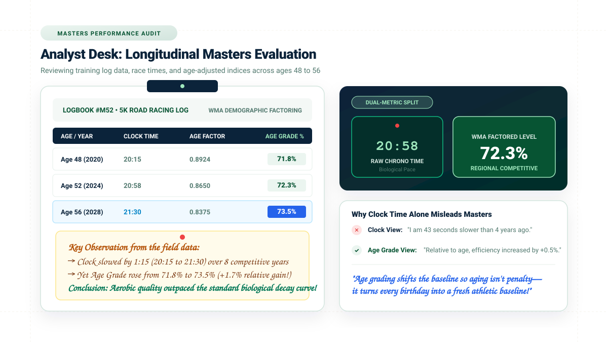
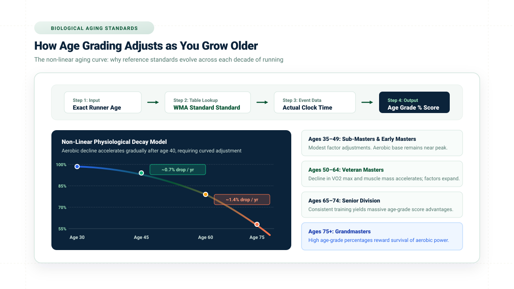
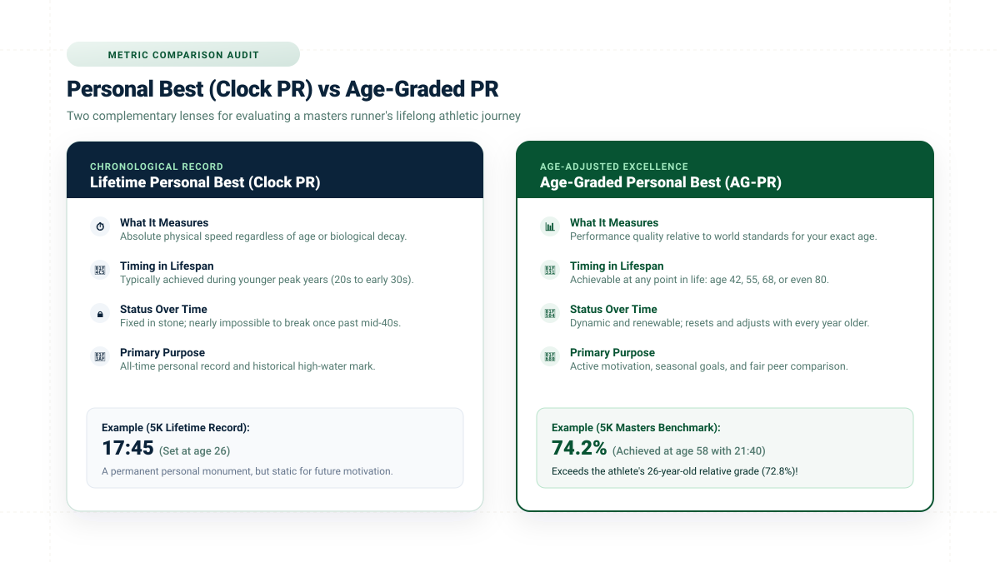
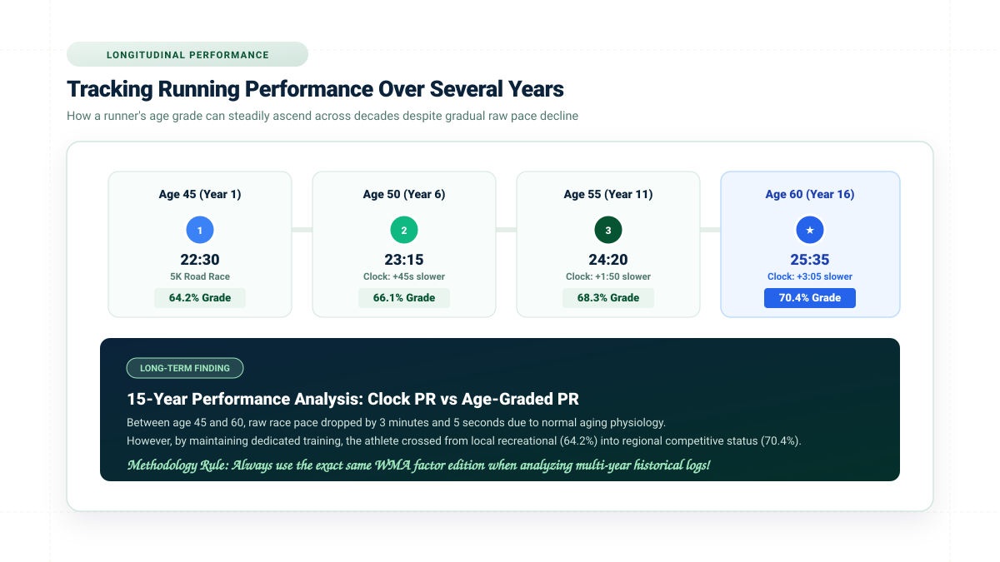

Direct Answer: How Age Grading Works for Masters Runners
Age grading allows masters runners (typically athletes aged 35 and older) to evaluate their race performance against an objective demographic standard rather than judging themselves exclusively by a stopwatch or younger competitors. Because natural biological aging causes maximum oxygen consumption (VO2 max) and muscular elasticity to decrease over time, raw race finishing times will inevitably slow. Age grading counteracts this physiological drift by dividing the world-record reference time for the runner's exact age and sex by their actual finish time, expressing the result as a percentage (such as 68.5% or 74.2%).
If you already have your race day age, certified event distance, and net chip finish time, you can jump straight to our verified Age Grading Calculator to calculate your age grade immediately.
What Is Age Grading for Masters Runners?
In standard road racing, runners are accustomed to evaluating their performance through a single metric: clock time. When an athlete is 24 years old, clock time tells a straightforward story—faster is better, and a new record means personal physical improvement. However, once an athlete reaches the masters category (recognized internationally as beginning at age 35, with specialized divisions in five-year increments like M40, W45, M50, and beyond), clock time becomes an incomplete metric.
Age grading does not replace the clock; it introduces a secondary analytical dimension that neutralizes the biological penalty of chronological aging. While Article #1 establishes the foundational definition of age grading, for masters athletes the system functions as an equity standard:
What Happened on the Course
Your gross or net chip time recorded by official race timing mats. It measures absolute speed across terrain, but completely ignores biological age, hormonal shifts, and decade-long cellular aging.
Relative Demographic Quality
Your finishing time divided into the certified world-standard performance for your specific age and sex. It reveals how efficiently your cardiovascular engine performed relative to the physiological limits of human longevity.
By applying this lens, a 55-year-old runner who clocks 21:30 in a 5K understands that their aerobic output is competitive with a 25-year-old running 17:45, providing an equitable foundation for sports analysis.
Why Is Age Grading Useful for Masters Runners?
For runners who continue racing across decades, age grading is not merely an interesting post-race statistic; it is an essential training and motivational tool. As master athletes gain experience, their training objectives evolve from raw youthful velocity to sustained aerobic excellence. Age grading provides five distinct advantages:
1. Tracking Personal Progression Across Decades
When you compare race times from age 40 to age 55, your stopwatch will show slower times. Age grading enables you to track whether your conditioning has actually improved relative to your aging peer baseline.
2. Putting Slower Raw Times into Proper Context
A 22-minute 5K at age 58 is physiologically superior to a 21-minute 5K run at age 32. Age grading eliminates the psychological discouragement of chronological slowdown by proving your relative stamina remains intact.
3. Establishing Renewable "Age-Graded PRs"
Instead of chasing a lifetime personal record set twenty years ago, masters runners can target age-graded personal records (such as breaking 70% or 75%), establishing fresh, attainable milestones for every racing season.
4. Leveling Comparisons Across Different Divisions
Age grading enables fair competition across diverse age brackets. A 62-year-old grandmother and her 28-year-old son can race the same local 10K and use their respective age grades to determine who achieved the stronger relative performance.

How Does Age Grading Change as You Get Older?
A common misconception among beginner masters runners is that age grading applies a simple, flat percentage deduction—such as subtracting 1% from your finish time for every year over 35. Human physiology does not operate on a linear scale, and neither do certified age-grading algorithms.
As documented in our guide to how age grade is calculated, international governing bodies like World Masters Athletics (WMA) construct empirical demographic decay curves based on thousands of ratified master records. The adjustment curve follows three distinct phases:
- Sub-Masters and Early Masters (Ages 35–45): Aerobic decline is exceptionally gentle (roughly 0.4% to 0.7% per year). A runner in this cohort with disciplined training can often match or exceed their youthful times through improved tactical maturity, high-volume aerobic bases, and better race pacing.
- Mid-Tier Veteran Masters (Ages 46–64): Sarcopenia (gradual reduction of fast-twitch muscle fibers) and reductions in stroke volume and maximal heart rate accelerate the natural biological decay curve to approximately 1.0% to 1.2% per year. WMA factor tables widen significantly during this phase to maintain parity.
- Senior Masters and Grandmasters (Ages 65+): Physiological deceleration becomes steeper. Consequently, even modest clock times translate into high regional and national age-grade percentages, rewarding athletes who preserve aerobic capacity into late adulthood.

Can an Older Runner Have a Higher Age Grade Than a Younger Runner?
Yes, and in competitive club racing this happens frequently. Because age grading assesses how closely a finish time approaches the world-class ceiling for that specific age, a disciplined older athlete running a steady, well-paced race will routinely achieve a higher score than a younger runner operating at recreational effort.
Consider a practical comparison from a certified 5K road championship:
| Runner Identity | Age & Division | Raw Clock Time | WMA Standard Factor | Age Grade % | Athletic Calibration |
|---|---|---|---|---|---|
| Runner A | 35-Year-Old Male | 18:30 (5:57/mi) | 0.9850 | 70.8% | Local Club Standard |
| Runner B | 50-Year-Old Male | 19:45 (6:21/mi) | 0.8845 | 74.6% | Regional Competitive |
| Runner C | 62-Year-Old Male | 21:15 (6:50/mi) | 0.7960 | 78.1% | High Regional Standard |
| Runner D | 70-Year-Old Female | 26:30 (8:32/mi) | 0.6650 | 82.4% | National-Class Standard |
In the field above, Runner A finished the course nearly eight minutes ahead of Runner D. On the raw race results sheet, Runner A ranked near the top of the overall field. However, in terms of aerobic output relative to human biological capacity, Runner D's 26:30 at age 70 represents a national-class 82.4% performance, whereas Runner A's 18:30 represents a respectable but common 70.8% club standard. You can test your own numbers with our running age grade calculator to see where your performances land on this spectrum.
Age Grading vs Personal Best for Masters Runners
Most athletes begin running with a primary focus on their lifetime personal best (PR/PB). If you ran a 16:45 5K or a 2:48 marathon at age 25, that clock time remains etched into your personal athletic history. However, anchoring your current motivation to a decade-old clock time often leads to frustration, overtraining, and injury.

| Evaluation Metric | Chronological Personal Best (Clock PR) | Age-Graded Personal Best (AG-PR) |
|---|---|---|
| Core Measurement | Absolute physical speed recorded by official race clock. | Relative aerobic efficiency against demographic world standards. |
| Lifespan Timing | Almost always established during youthful peak years (ages 20–34). | Achievable at any point in life (e.g., ages 42, 55, 68, or 75+). |
| Behavior Over Time | Static monument; becomes progressively impossible to surpass. | Dynamic benchmark; resets with every birthday to maintain motivation. |
| Coaching Value | Historical record of peak raw velocity. | Active gauge of training efficiency and longevity health. |
Experienced coaches recommend that masters runners maintain two distinct records: your Lifetime Clock PR, which you respect as a historical accomplishment, and your Current Age-Graded PR, which you actively defend and improve each season. As explored in our breakdown of what is a good age grade in running, raising your age grade from 64% to 68% between ages 50 and 55 represents a true athletic breakthrough.
How to Track Your Running Performance as You Age
To use age grading effectively for longitudinal athletic development, you must establish a consistent logging framework. A haphazard comparison of a hilly trail run at age 48 against a flat, cold road race at age 52 will yield misleading results.
To ensure valid multi-year performance audits, maintain four methodological standards:
- Standardize Race Distances: Compare 5K to 5K or half marathon to half marathon. Cross-distance conversions introduce additional physiological variables like threshold endurance and fuel utilization.
- Ensure Comparable Courses: Road surfaces certified by USATF or UK Athletics provide flat, accurately measured baselines. Do not compare a net-downhill course with a hilly cross-country loop.
- Control Environmental Extremes: High heat (above 22°C / 72°F) or severe headwinds can depress clock performance by 2% to 5% without indicating any loss in underlying aerobic conditioning.
- Lock Your Methodology Version: When auditing multi-year trends, ensure your scores are calculated using the identical WMA factor edition (e.g., the 2020 WMA road standards). When factor editions are updated, recalculate historical baselines so changes in table standards are not mistaken for changes in physical fitness.
How Age Grading Can Help You Understand Race Results
Whenever you finish an organized road race, your official results page displays multiple numbers. Masters runners who understand how to synthesize these layers gain a superior analytical perspective on their race day performance:
The Stopwatch Record
Your net chip time from start line to finish arch. Tells you your physical pace on the course (e.g., 22:45 / 7:20 per mile).
Local Tactical Standing
Where you crossed the line among entrants in your five-year division (e.g., 4th out of 42 runners in M55–59). Reflects the immediate field quality.
The Universal Demographic Index
Your finishing time mapped against the international standard for your single-year age (e.g., 71.2%). This number is completely independent of who showed up to the event, providing an uncorrupted benchmark that you can compare against any certified race worldwide.
Age Grade vs Age-Group Position: Key Differences
Many road runners mistakenly believe that age-group rank and age-grade percentage are interchangeable. In reality, they evaluate two fundamentally different competitive dimensions:
Age-Group Ranking is a zero-sum, localized measure. It depends entirely on who registered for that particular race. If you enter a small suburban 5K with five runners in the M60 category, running a modest 25:30 might win your division. If you run that exact same 25:30 at a competitive national marathon festival, you might place 35th in the same age group. Your placement varied wildly even though your athletic performance was identical.
Age-Grade Percentage is an absolute, standardized measure. Whether you finish first in an empty local field or 50th at the Boston Marathon, a 25:30 5K for a 60-year-old male translates to exactly 65.4% under WMA road standards. It provides stability that race-day placements cannot offer. For a comprehensive comparison of division awards versus scoring tables, consult our dedicated guide: Age-Graded Results vs Age-Group Results: Key Differences.
Masters Performance Journey: Longitudinal Progression Case
Demonstrating how a dedicated masters runner levels up relative aerobic quality over four consecutive years despite natural clock deceleration.
Does Age Grading Work for Every Race Distance?
Age grading is not restricted to 5K road events. The underlying WMA and USATF reference models provide standardized factors across a broad spectrum of recognized athletic competitions, including:
- Standard Road Distances: 5K, 10K, 12K, 15K, 10 Miles, Half Marathon (21.0975 km), and Full Marathon (42.195 km).
- Traditional Track Events: 800m, 1500m, 1 Mile, 3000m, 5000m, and 10,000m.
- Ultra and Specialty Events: Select governing bodies maintain experimental tables for 50K and 100K road championships, though sample sizes of world-record data decrease significantly at extreme ultra distances.
When switching distances, runners often notice subtle variations in their scores. A masters runner who focuses heavily on weekly long slow distance may score 72% in the half marathon but only 67% in a fast-twitch 5K. These differences highlight your specific physiological strengths (aerobic endurance vs speed endurance) rather than calculation flaws.
Can Masters Runners Compare Their Age Grade Over Several Years?
Yes. In fact, multi-year tracking is where age grading delivers its greatest psychological and analytical value. Because age factors adjust downwards each year according to empirical demographic models, you can track whether your conditioning is outpacing natural age-related slowdown.

When tracking your performances across consecutive racing seasons, use our verified tools to track your age-adjusted performance. If your score stays flat (e.g., maintaining 71.0% at age 52 and 71.0% at age 55), your physical fitness is precisely matching the theoretical aging curve. If your score rises, your aerobic conditioning has outpaced the aging curve—meaning you are functionally fitter relative to your peers than you were three years prior.
What Can Affect a Masters Runner's Age Grade?
Your calculated age grade is determined by strict mathematical formulas, but the inputs that feed the equation are influenced by both biological and environmental variables. Six key factors dictate your final score:
1. Net Chip Finish Time
Your official recorded time from timing line to finish line directly determines the numerator or denominator of the age-grade ratio.
2. Exact Age on Race Day
WMA standards evaluate single-year increments. Crossing a birthday milestone shifts you into a new factor bracket with adjusted benchmarks.
3. Certified Distance
Courses must be accurately measured and certified. Running a GPS-short or long course distorts your finish time and invalidates the percentage.
4. Course Topography
Standard tables assume flat, paved road conditions. Extreme hills or trail surfaces slow pace without reflecting true aerobic capacity.
5. Ambient Weather
Heat, high humidity, freezing sleet, or heavy headwinds increase cardiovascular strain, slowing finish times across all age divisions.
6. Table Methodology
Scores vary slightly depending on which WMA table version is used (e.g., 2015 vs 2020 editions). Consistency in data versioning is vital.
Is Age Grading a Measure of Fitness?
It is crucial to clarify a common athletic misunderstanding: age grading is an athletic performance comparison metric, not a comprehensive clinical health score.
Performance Metric vs Medical Assessment
Your age grade measures how fast you covered a certified running distance relative to statistical demographic world records. It does not directly measure:
- Cardiovascular health, blood pressure, or arterial stiffness
- Biomarkers like lipid panels, fasting glucose, or systemic inflammation
- Musculoskeletal balance, joint mobility, or injury resistance
- Mental wellness, sleep quality, or general longevity
A masters runner who achieves a 75% age grade undoubtedly possesses strong aerobic power, but this score should never be treated as a substitute for professional medical screening or cardiovascular health checks.
How Can Masters Runners Use an Age Grading Calculator?
Calculating your score by hand requires consulting complex multi-page WMA factor matrices. With our interactive calculator, masters athletes can verify their performance in six straightforward steps:
- Enter Your Race Day Age: Enter your exact completed age on the date the race took place. If your birthday occurred the day before the race, use your new age.
- Select Your Biological Sex: Choose male or female to load the appropriate demographic world-standard baseline.
- Choose Your Certified Event Distance: Select from standard options (5K, 10K, Half Marathon, Full Marathon, or custom track lengths).
- Input Your Net Chip Finish Time: Enter hours, minutes, and seconds from your official race timing certificate.
- Generate Your Age Grade: The calculator applies certified WMA factors to compute your exact percentage score.
- Record and Compare: Archive the score in your training log to track seasonal trends and compare against future birthdays.
Example: Tracking a Masters Runner's Performance
To see how age grading functions in real-world masters training, examine the performance progression of David, a 55-year-old road runner preparing for regional masters road championships:
Case Study: 5K Masters Longitudinal Tracking
Verified WMA AuditAthlete Profile: Male Masters Runner · Event: 5K Road Race
Year 1: Age 55 Baseline
Year 2: Age 58 Evaluation
Without age grading, David might look at his stopwatch and feel disappointed that his 5K pace slowed by 11 seconds per mile between age 55 and age 58. With age grading, he understands that his aerobic conditioning actually advanced by +0.36% relative to the standard aging curve, confirming that his training program is highly effective.
How to Improve Your Age Grade as a Masters Runner
Unlike youthful training, which often relies on high anaerobic intervals and heavy racing frequency, improving an age grade in your 40s, 50s, 60s, and beyond requires balancing aerobic stimulation with physiological recovery:
- Emphasize Polarized Aerobic Volume: As runners age, the capillary network and mitochondrial density that support aerobic power respond best to easy, conversational running. Keep 80% of your weekly volume truly easy to build stamina without causing systemic fatigue.
- Incorporate Regular Heavy Strength Training: Masters runners naturally experience muscular degradation (sarcopenia) and decreased tendon stiffness. Performing compound resistance exercises (squats, deadlifts, calf raises) 2 days per week preserves running economy and protects against repetitive impact injuries.
- Prioritize Sleep and Neuromuscular Recovery: Cellular protein synthesis and hormonal recovery take longer as we age. Spacing quality speed workouts with 72 hours of recovery instead of 48 hours allows masters runners to hit higher quality paces without risking overtraining syndrome.
- Race on Certified, Fast Terrain: If your goal is to set a new Age-Graded PR, choose cool-weather autumn or spring races on flat, certified courses with good road surfaces and minimal sharp turns.
What Is a Good Age Grade for a Masters Runner?
There is no single universal cutoff that defines a "good" masters score, as athletic backgrounds and training histories vary widely. However, the international running community generally categorizes WMA age-grade percentages into five functional tiers:
- 50.0% to 59.9%: Solid recreational standard. Typical for consistent joggers and casual 5K/10K race participants.
- 60.0% to 69.9%: Local club-level standard. Indicates regular structured weekly mileage and dedicated aerobic pacing.
- 70.0% to 79.9%: Regional competitive standard. Runners in this tier frequently place on age-group podiums in local and regional road events.
- 80.0% to 89.9%: National-class competitive caliber. High-level amateur and masters athletes capable of competing at national championships.
- 90.0% and Above: World-class masters standard. Reserved for national record holders and international masters medalists.
For an in-depth breakdown of each percentage band, including full case studies and pacing charts, read our comprehensive guide: What Is a Good Age Grade in Running? Age Grade Percentages Explained.
Limitations of Age Grading for Masters Runners
While age grading is an exceptional sports analytics tool, masters athletes should remain conscious of its practical limitations:
- Demographic Outlier Effects: Reference standards are derived from world-record data. In demographic age brackets with fewer active competitors (such as athletes over 80), world records may be held by rare genetic outliers, making percentages appear artificially harsh.
- Weather and Elevation Blindness: Standard scoring models do not adjust for headwinds, high heat, humidity, or thin air at altitude.
- Course Certification Discrepancies: GPS watch distance is not race certification. Courses that are slightly long or short skew the math.
- Model Disagreements Between Table Editions: WMA periodically updates its factor tables (e.g., 2006, 2015, and 2020 editions). Different race timing companies may use different table versions, leading to slight variations across race certificates.
Frequently Asked Questions
What is age grading for masters runners?
Age grading is an athletic scoring framework that adjusts a runner's finish time against the statistical world-standard performance for their specific age and sex, providing an objective percentage of peak human capability.
Why is age grading useful for masters runners?
Because biological aging predictably slows raw clock speed, age grading provides context. It allows masters runners to track progress across years, evaluate training efficacy, and fairly compare results against younger competitors.
Can a masters runner beat a younger runner on age grade?
Yes. A 60-year-old running 21:00 achieves a 77.2% age grade, easily outscoring a 35-year-old running an 18:30 (70.8%). The older runner performed closer to the demographic world standard for their cohort.
Does age grading become more useful as you get older?
Yes. As lifetime clock personal bests from youthful years become physically unobtainable, age grading provides renewable, age-adjusted milestones that celebrate lifelong athletic dedication.
Can I compare my age grade from different years?
Yes, provided you use the same calculation methodology (such as certified WMA factors), standardized course distances, and comparable race conditions.
Is age grade better than age-group ranking?
Neither is better; they answer different questions. Age-group rank measures placement against who registered for that race, while age grade measures performance against an international demographic benchmark.
Does age grading work for 5K and 10K races?
Yes. The 5K and 10K are the most heavily researched and statistically robust distances in World Masters Athletics scoring tables.
Is age grade a measure of overall fitness?
No. Age grade is an athletic performance metric comparing race times. It is not a clinical health score and does not evaluate cardiovascular biomarkers or general medical fitness.
How can I calculate my age grade?
You can calculate your age grade instantly using the verified Age Grading Calculator on Age Calculator Lab.
Track Your Age-Adjusted Running Performance
Enter your age, sex, race distance, and net finish time to calculate your verified age grade and monitor your athletic development across every season.
Calculate My Age Grade →Methodology & Sources
Reference Standards: Athletic factors published on Age Calculator Lab are aligned with official World Masters Athletics (WMA) and USA Track & Field (USATF) road scoring standards.
Mathematical Derivation: Age grade percentage is calculated as (Age-Adjusted World Standard Time / Actual Finish Time) × 100. For detailed arithmetic breakdowns and open-equivalent formulas, see How Is Age Grade Calculated?.
Verification: Scoring tables are audited and synchronized with active race timing standards. Last verified September 2026.